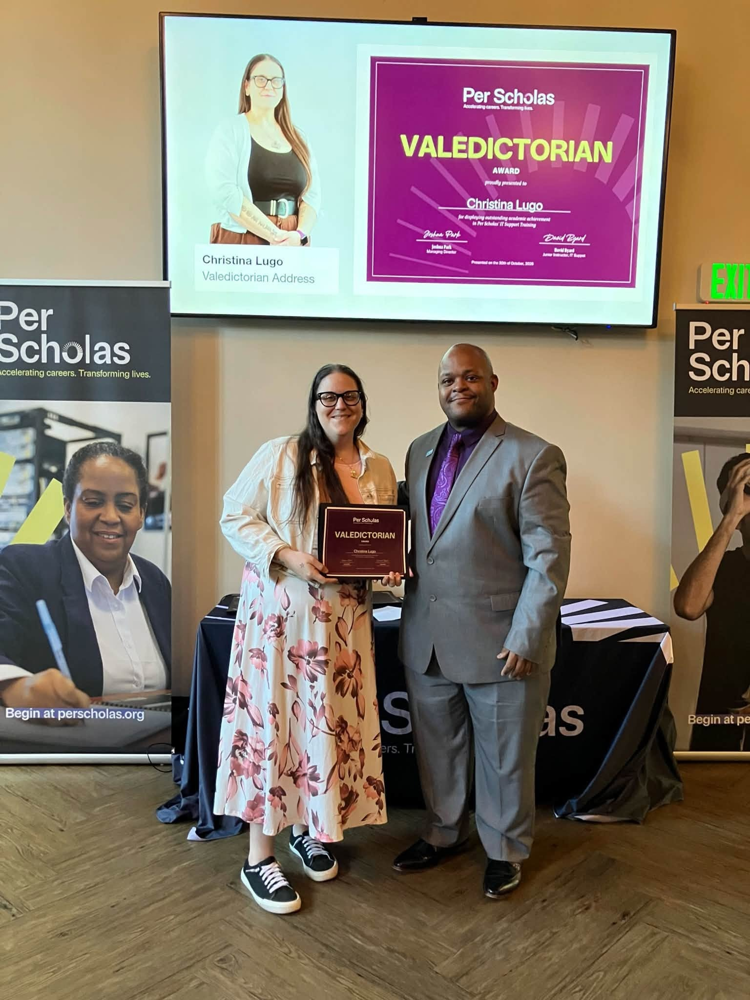
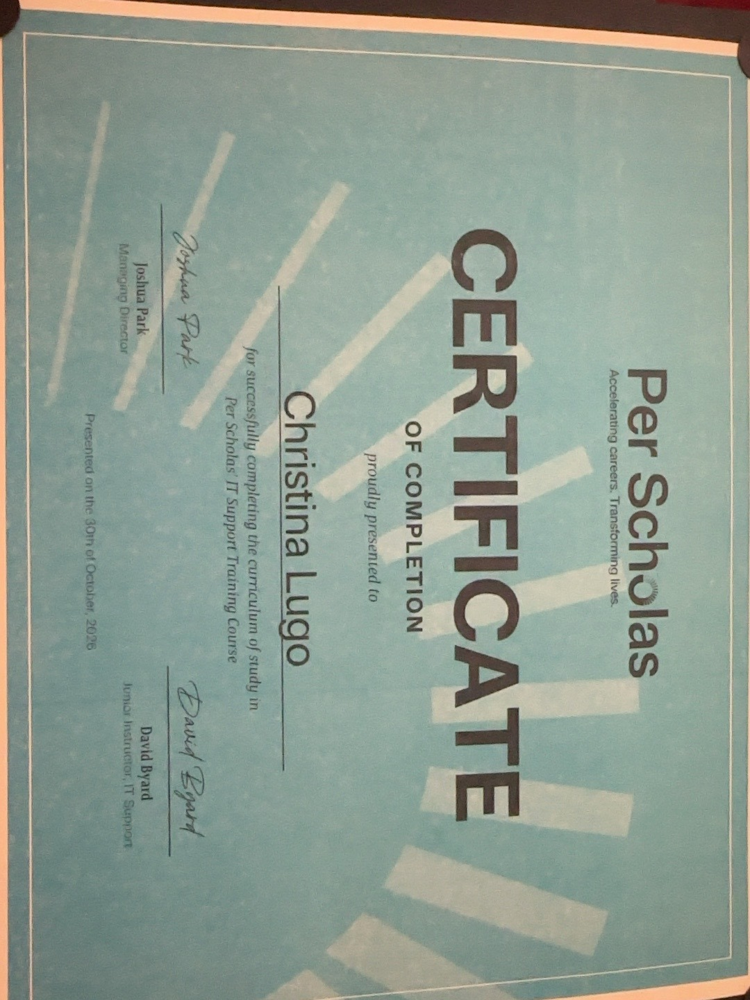
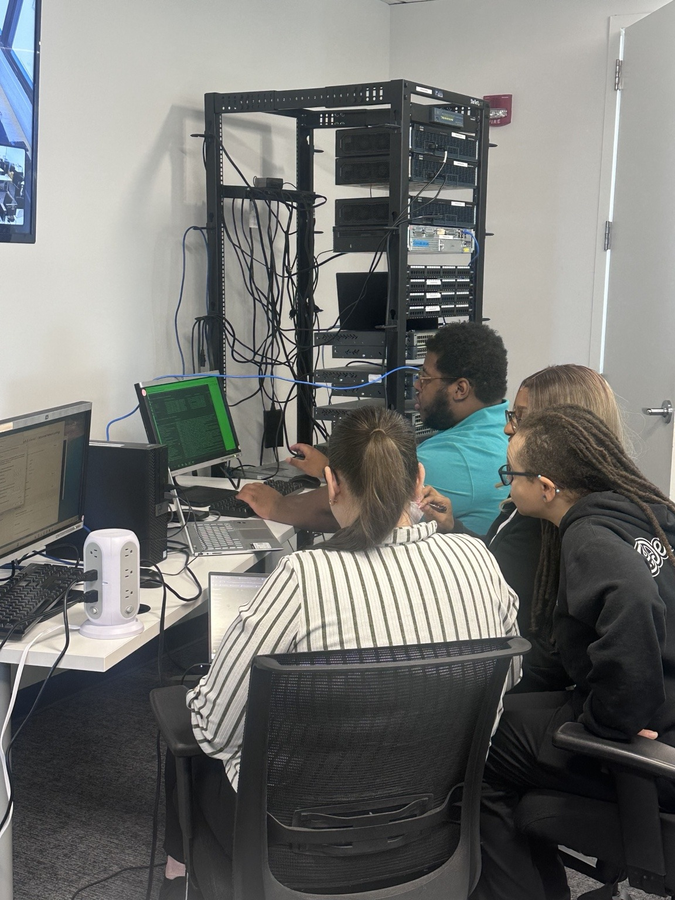
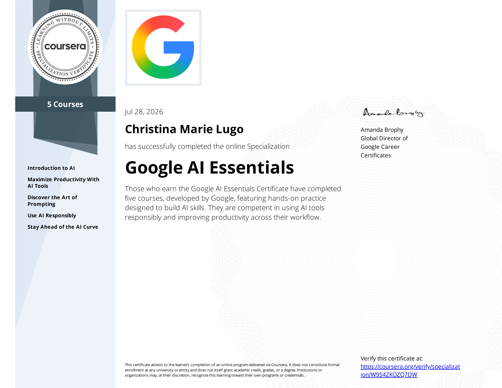
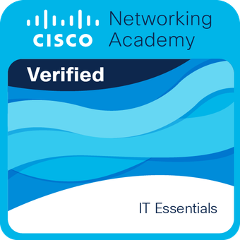
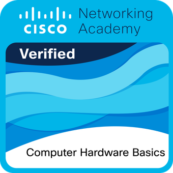
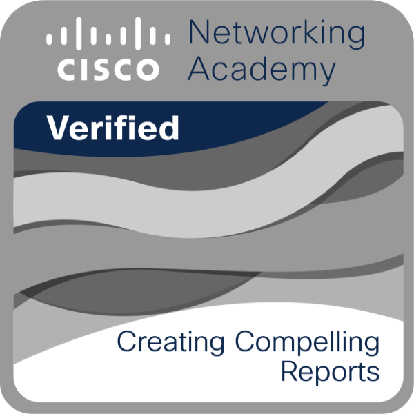

I am a CompTIA A+ certified IT professional and graduate of the Per Scholas AI-Enabled IT Support program, where I completed more than 600 hours of hands-on technical training. My training included Windows systems, Windows Server, Active Directory, Group Policy, networking, Linux, ServiceNow, cybersecurity fundamentals, cloud concepts, hardware, troubleshooting, and technical documentation.
Before transitioning into technology, I spent more than 10 years in hospitality. That experience taught me how to listen, communicate clearly, solve problems under pressure, manage competing priorities, work with many different personalities, and make people feel supported. I now bring those strengths into IT alongside my technical training and genuine curiosity about how technology works.
I enjoy hands-on troubleshooting, learning new systems, and finding practical solutions. I am especially interested in opportunities where I can continue developing in IT support, systems, networking, cloud, infrastructure, and cybersecurity.
CompTIA A+ certification earned after successfully completing the Core 1 (220-1201) and Core 2 (220-1202) certification exams.
Graduated from the Per Scholas AI-Enabled IT Support program after completing 600+ hours of technical training. I was honored to be named Valedictorian and to receive the Per Scholas Core Values Award.


My training combined technical instruction with hands-on labs, troubleshooting exercises, team projects, system administration, networking, and real-world support scenarios.


Google / Coursera

Cisco Networking Academy

Cisco Networking Academy

Cisco Networking Academy
Certified October 2026
Collaborated on a migration and stabilization capstone that simulated an enterprise IT environment. Our team configured a Windows Server 2022 domain controller and Windows 11 client in a virtualized network, then investigated six post-migration incidents affecting authentication, shared resources, Group Policy, printing, system performance, and file access.
Simulated a Junior Network Engineer response to a TCP SYN Flood DDoS attack targeting game infrastructure. Used generative AI to accelerate log analysis and response planning while applying human review and networking knowledge to validate and refine the output.
Initial Analysis: Directed AI to analyze TCP flow logs, identify attack anomalies, evaluate resource impact, and propose immediate mitigations.
Refinement: Expanded the response to include mitigation options, team task planning, and communication considerations.
AI accelerated initial log review and helped organize a response plan, but technical human oversight remained necessary to validate recommendations and keep the response realistic.
Collaborated in a technical workgroup to perform complete hardware disassembly, component inspection, and reassembly of desktop computers in a live lab environment.
Collaborated with a technical group to research, map, and present PSU architecture, connector pinouts, voltage delivery rails, and safety considerations for desktop computing environments.
More than 10 years in hospitality taught me that great support is about more than fixing the immediate problem. It is also about listening, communicating clearly, earning trust, and helping someone through a frustrating situation. Those skills now shape the way I approach technical support.
Listen carefully, ask useful questions, and explain information clearly to people with different needs and communication styles.
Identify what is going wrong, work through possible solutions, and know when an issue needs to be escalated.
Bring patience, empathy, professionalism, and a focus on making users feel heard while working toward a solution.
Stay calm, organized, and accurate while managing many requests and changing priorities in fast-paced environments.
Adjust quickly when circumstances change, information is incomplete, or the original plan no longer works.
Communicate and coordinate across teams because successful problem resolution often depends on collaboration.
Check details, maintain accuracy, and follow through because small mistakes can create much larger problems.
Build trust through reliability, patience, consistency, and approachable communication.
Recognize what needs immediate attention, what can wait, and how to keep multiple responsibilities moving.
2015 – Present
Outside of formal training, I enjoy building and optimizing custom gaming PCs for myself and friends. I like exploring hardware capabilities, testing performance, troubleshooting system components, and continuing to learn how systems work beyond the classroom.